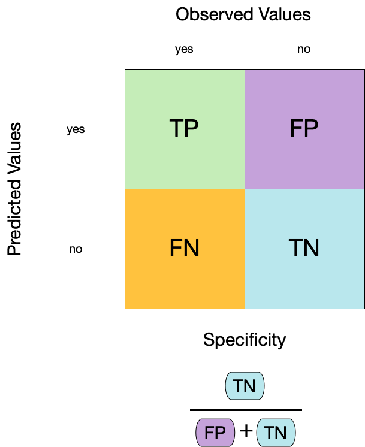

library(tidymodels)
library(forested)
forested
#> # A tibble: 7,107 × 19
#> forested year elevation eastness northness roughness tree_no_tree dew_temp
#> <fct> <dbl> <dbl> <dbl> <dbl> <dbl> <fct> <dbl>
#> 1 Yes 2005 881 90 43 63 Tree 0.04
#> 2 Yes 2005 113 -25 96 30 Tree 6.4
#> 3 No 2005 164 -84 53 13 Tree 6.06
#> 4 Yes 2005 299 93 34 6 No tree 4.43
#> 5 Yes 2005 806 47 -88 35 Tree 1.06
#> 6 Yes 2005 736 -27 -96 53 Tree 1.35
#> 7 Yes 2005 636 -48 87 3 No tree 1.42
#> 8 Yes 2005 224 -65 -75 9 Tree 6.39
#> 9 Yes 2005 52 -62 78 42 Tree 6.5
#> 10 Yes 2005 2240 -67 -74 99 No tree -5.63
#> # ℹ 7,097 more rows
#> # ℹ 11 more variables: precip_annual <dbl>, temp_annual_mean <dbl>,
#> # temp_annual_min <dbl>, temp_annual_max <dbl>, temp_january_min <dbl>,
#> # vapor_min <dbl>, vapor_max <dbl>, canopy_cover <dbl>, lon <dbl>, lat <dbl>,
#> # land_type <fct>Tidymodeling
Part I
Running Example Part I: The Whole Game

Running Example Part I: The Whole Game

Running Example Part I: The Whole Game

Running Example Part I: The Whole Game

Data on forests in Washington
- The U.S. Forest Service maintains ML models to predict whether a plot of land is “forested.”
- This classification is important for all sorts of research, legislation, and land management purposes.
- Plots are typically remeasured every 10 years and this dataset contains the most recent measurement per plot.
- Type
?forestedto learn more about this dataset, including references.

Data on forests in Washington
N = 7,107plots of land, one from each of 7,107 6000-acre hexagons in WA.- A nominal outcome,
forested, with levels"Yes"and"No", measured “on-the-ground.” - 18 remotely-sensed and easily-accessible predictors:
- numeric variables based on weather and topography.
- nominal variables based on classifications from other governmental orgs.

Data splitting and spending

Your turn

When is a good time to split your data?
05:00
The initial split 

This function uses a good default, but this depends on your specific goal/data
Accessing the data 
The training set
forested_train
#> # A tibble: 5,330 × 19
#> forested year elevation eastness northness roughness tree_no_tree dew_temp
#> <fct> <dbl> <dbl> <dbl> <dbl> <dbl> <fct> <dbl>
#> 1 No 2016 464 -5 -99 7 No tree 1.71
#> 2 Yes 2016 166 92 37 7 Tree 6
#> 3 No 2016 644 -85 -52 24 No tree 0.67
#> 4 Yes 2014 1285 4 99 79 Tree 1.91
#> 5 Yes 2013 822 87 48 68 Tree 1.95
#> 6 Yes 2017 3 6 -99 5 Tree 7.93
#> 7 Yes 2014 2041 -95 28 49 Tree -4.22
#> 8 Yes 2015 1009 -8 99 72 Tree 1.72
#> 9 No 2017 436 -98 19 10 No tree 1.8
#> 10 No 2018 775 63 76 103 No tree 0.62
#> # ℹ 5,320 more rows
#> # ℹ 11 more variables: precip_annual <dbl>, temp_annual_mean <dbl>,
#> # temp_annual_min <dbl>, temp_annual_max <dbl>, temp_january_min <dbl>,
#> # vapor_min <dbl>, vapor_max <dbl>, canopy_cover <dbl>, lon <dbl>, lat <dbl>,
#> # land_type <fct>The test set 
üôà
There are 1777 rows and 19 columns in the test set.
Your turn
Split your data so 20% is held out for the test set.
Try out different values in set.seed() to see how the results change.
05:00
Data splitting and spending 
Split your data so 20% is held out for the test set.
Your turn
Explore the forested_train data on your own!
- What’s the distribution of the outcome,
forested? - What’s the distribution of numeric variables like
precip_annual? - How does the distribution of
foresteddiffer across the categorical variables?
10:00
The whole game - status update
And now it’s time for…
How do you fit a linear model in R?
How many different ways can you think of?
lmfor linear modelglmnetfor regularized regressionkerasfor regression using TensorFlowstanfor Bayesian regressionsparkfor large data setsbruleefor regression using torch
To specify a model 

- Choose a model
- Specify an engine
- Set the mode
To specify a model 
To specify a model 
- Choose a model
- Specify an engine
- Set the mode
The computational engine indicates how the model is fit, such as with a specific R package implementation or even methods outside of R like Keras or Stan
To specify a model 
To specify a model 
To specify a model 
- Choose a model
- Specify an engine
- Set the mode
The mode denotes in what kind of modeling context it will be used
To specify a model 
To specify a model 
All available models are listed at https://www.tidymodels.org/find/parsnip/
To specify a model 
- Choose a model
- Specify an engine
- Set the mode
Your turn
Run the tree_spec chunk in your .qmd.
Edit this code to use a logistic regression model.
All available models are listed at https://www.tidymodels.org/find/parsnip/
Extension/Challenge: Edit this code to use a different model. For example, try using a conditional inference tree as implemented in the partykit package by changing the engine - or try an entirely different model type!
10:00
Logistic regression

Logistic regression

- Logit of outcome probability modeled as linear combination of predictors:
\(log(\frac{p}{1 - p}) = \beta_0 + \beta_1\cdot \text{A}\)
- Find a sigmoid line that separates the two classes
Decision trees

Series of splits or if/then statements based on predictors
First the tree grows until some condition is met (maximum depth, no more data)
Then the tree is pruned to reduce its complexity
Decision trees

Workflows bind preprocessors and models

What is wrong with this?

Why a workflow()? 

- Workflows handle new data better than base R tools in terms of new factor levels
- You can use other preprocessors besides formulas (more on feature engineering in part 2 of the course)
- They can help organize your work when working with multiple models
- Most importantly, a workflow captures the entire modeling process:
fit()andpredict()apply to the preprocessing steps in addition to the actual model fit
A model workflow 

tree_spec <-
decision_tree() %>%
set_mode("classification")
tree_spec %>%
fit(forested ~ ., data = forested_train)
#> parsnip model object
#>
#> n= 5685
#>
#> node), split, n, loss, yval, (yprob)
#> * denotes terminal node
#>
#> 1) root 5685 2550 Yes (0.55145119 0.44854881)
#> 2) land_type=Tree 3064 300 Yes (0.90208877 0.09791123) *
#> 3) land_type=Barren,Non-tree vegetation 2621 371 No (0.14154903 0.85845097)
#> 6) temp_annual_max< 13.395 347 153 Yes (0.55907781 0.44092219)
#> 12) tree_no_tree=Tree 92 6 Yes (0.93478261 0.06521739) *
#> 13) tree_no_tree=No tree 255 108 No (0.42352941 0.57647059) *
#> 7) temp_annual_max>=13.395 2274 177 No (0.07783641 0.92216359) *A model workflow 

tree_spec <-
decision_tree() %>%
set_mode("classification")
workflow() %>%
add_formula(forested ~ .) %>%
add_model(tree_spec) %>%
fit(data = forested_train)
#> ══ Workflow [trained] ════════════════════════════════════════════════
#> Preprocessor: Formula
#> Model: decision_tree()
#>
#> ── Preprocessor ──────────────────────────────────────────────────────
#> forested ~ .
#>
#> ── Model ─────────────────────────────────────────────────────────────
#> n= 5685
#>
#> node), split, n, loss, yval, (yprob)
#> * denotes terminal node
#>
#> 1) root 5685 2550 Yes (0.55145119 0.44854881)
#> 2) land_type=Tree 3064 300 Yes (0.90208877 0.09791123) *
#> 3) land_type=Barren,Non-tree vegetation 2621 371 No (0.14154903 0.85845097)
#> 6) temp_annual_max< 13.395 347 153 Yes (0.55907781 0.44092219)
#> 12) tree_no_tree=Tree 92 6 Yes (0.93478261 0.06521739) *
#> 13) tree_no_tree=No tree 255 108 No (0.42352941 0.57647059) *
#> 7) temp_annual_max>=13.395 2274 177 No (0.07783641 0.92216359) *A model workflow 

tree_spec <-
decision_tree() %>%
set_mode("classification")
workflow(forested ~ ., tree_spec) %>%
fit(data = forested_train)
#> ══ Workflow [trained] ════════════════════════════════════════════════
#> Preprocessor: Formula
#> Model: decision_tree()
#>
#> ── Preprocessor ──────────────────────────────────────────────────────
#> forested ~ .
#>
#> ── Model ─────────────────────────────────────────────────────────────
#> n= 5685
#>
#> node), split, n, loss, yval, (yprob)
#> * denotes terminal node
#>
#> 1) root 5685 2550 Yes (0.55145119 0.44854881)
#> 2) land_type=Tree 3064 300 Yes (0.90208877 0.09791123) *
#> 3) land_type=Barren,Non-tree vegetation 2621 371 No (0.14154903 0.85845097)
#> 6) temp_annual_max< 13.395 347 153 Yes (0.55907781 0.44092219)
#> 12) tree_no_tree=Tree 92 6 Yes (0.93478261 0.06521739) *
#> 13) tree_no_tree=No tree 255 108 No (0.42352941 0.57647059) *
#> 7) temp_annual_max>=13.395 2274 177 No (0.07783641 0.92216359) *Your turn
Run the tree_wflow chunk in your .qmd.
Edit this code to make a workflow with your own model of choice.
10:00
Predict with your model 

How do you use your new tree_fit model?
Your turn
Run:
predict(tree_fit, new_data = forested_test)
What do you notice about the structure of the result?
03:00
Your turn
Run:
augment(tree_fit, new_data = forested_test)
How does the output compare to the output from predict()?
05:00
Understand your model 

How do you understand your new tree_fit model?
Understand your model 

How do you understand your new tree_fit model?
You can extract_*() several components of your fitted workflow.
⚠️ Never predict() with any extracted components!
Understand your model 

How do you understand your new tree_fit model?
You can use your fitted workflow for model and/or prediction explanations:
- overall variable importance, such as with the vip package
- flexible model explainers, such as with the DALEXtra package
Learn more at https://www.tmwr.org/explain.html
Your turn
Extract the model engine object from your fitted workflow and check it out.
05:00
Confusion matrix 


Confusion matrix 
Confusion matrix 
Metrics for model performance 

Metrics for model performance 

Metrics for model performance 

Metrics for model performance 
We can use metric_set() to combine multiple calculations into one
forested_metrics <- metric_set(accuracy, specificity, sensitivity)
augment(forested_fit, new_data = forested_train) %>%
forested_metrics(truth = forested, estimate = .pred_class)
#> # A tibble: 3 × 3
#> .metric .estimator .estimate
#> <chr> <chr> <dbl>
#> 1 accuracy binary 0.944
#> 2 specificity binary 0.931
#> 3 sensitivity binary 0.954Metrics for model performance 
Metrics and metric sets work with grouped data frames!
Your turn
Apply the forested_metrics metric set to augment()
output grouped by tree_no_tree.
Do any metrics differ substantially between groups?
10:00
ROC curves
For an ROC (receiver operator characteristic) curve, we plot
- the false positive rate (1 - specificity) on the x-axis
- the true positive rate (sensitivity) on the y-axis
with sensitivity and specificity calculated at all possible thresholds.

ROC curves
We can use the area under the ROC curve as a classification metric:
- ROC AUC = 1 üíØ
- ROC AUC = 1/2 üò¢

ROC curves 
# Assumes _first_ factor level is event; there are options to change that
augment(forested_fit, new_data = forested_train) %>%
roc_curve(truth = forested, .pred_Yes) %>%
slice(1, 20, 50)
#> # A tibble: 3 × 3
#> .threshold specificity sensitivity
#> <dbl> <dbl> <dbl>
#> 1 -Inf 0 1
#> 2 0.235 0.885 0.972
#> 3 0.909 0.969 0.826
augment(forested_fit, new_data = forested_train) %>%
roc_auc(truth = forested, .pred_Yes)
#> # A tibble: 1 × 3
#> .metric .estimator .estimate
#> <chr> <chr> <dbl>
#> 1 roc_auc binary 0.975ROC curve plot 
Your turn
Compute and plot an ROC curve for your current model.
What data are being used for this ROC curve plot?
10:00
Dangers of overfitting

Dangers of overfitting ⚠️

Dangers of overfitting ⚠️ 
forested_fit %>%
augment(forested_train)
#> # A tibble: 5,685 × 22
#> .pred_class .pred_Yes .pred_No forested year elevation eastness northness
#> <fct> <dbl> <dbl> <fct> <dbl> <dbl> <dbl> <dbl>
#> 1 No 0.0114 0.989 No 2016 464 -5 -99
#> 2 Yes 0.636 0.364 Yes 2016 166 92 37
#> 3 No 0.0114 0.989 No 2016 644 -85 -52
#> 4 Yes 0.977 0.0226 Yes 2014 1285 4 99
#> 5 Yes 0.977 0.0226 Yes 2013 822 87 48
#> 6 Yes 0.808 0.192 Yes 2017 3 6 -99
#> 7 Yes 0.977 0.0226 Yes 2014 2041 -95 28
#> 8 Yes 0.977 0.0226 Yes 2015 1009 -8 99
#> 9 No 0.0114 0.989 No 2017 436 -98 19
#> 10 No 0.0114 0.989 No 2018 775 63 76
#> # ℹ 5,675 more rows
#> # ℹ 14 more variables: roughness <dbl>, tree_no_tree <fct>, dew_temp <dbl>,
#> # precip_annual <dbl>, temp_annual_mean <dbl>, temp_annual_min <dbl>,
#> # temp_annual_max <dbl>, temp_january_min <dbl>, vapor_min <dbl>,
#> # vapor_max <dbl>, canopy_cover <dbl>, lon <dbl>, lat <dbl>, land_type <fct>We call this “resubstitution” or “repredicting the training set”
Dangers of overfitting ⚠️ 
We call this a “resubstitution estimate”
Dangers of overfitting ⚠️ 
Dangers of overfitting ⚠️ 
⚠️ Remember that we’re demonstrating overfitting
⚠️ Don’t use the test set until the end of your modeling analysis
Your turn
Use augment() and a metric function to compute a classification metric like brier_class().
Compute the metrics for both training and testing data to demonstrate overfitting!
Notice the evidence of overfitting! ⚠️
10:00
Dangers of overfitting ⚠️ 
What if we want to compare more models?
And/or more model configurations?
And we want to understand if these are important differences?
Cross-validation

Cross-validation

Your turn
If we use 10 folds, what percent of the training data
- ends up in analysis
- ends up in assessment
for each fold?
05:00
Cross-validation 
vfold_cv(forested_train) # v = 10 is default
#> # 10-fold cross-validation
#> # A tibble: 10 × 2
#> splits id
#> <list> <chr>
#> 1 <split [5116/569]> Fold01
#> 2 <split [5116/569]> Fold02
#> 3 <split [5116/569]> Fold03
#> 4 <split [5116/569]> Fold04
#> 5 <split [5116/569]> Fold05
#> 6 <split [5117/568]> Fold06
#> 7 <split [5117/568]> Fold07
#> 8 <split [5117/568]> Fold08
#> 9 <split [5117/568]> Fold09
#> 10 <split [5117/568]> Fold10Cross-validation 
What is in this?
Cross-validation 
Cross-validation 
We’ll use this setup:
set.seed(123)
forested_folds <- vfold_cv(forested_train, v = 10)
forested_folds
#> # 10-fold cross-validation
#> # A tibble: 10 × 2
#> splits id
#> <list> <chr>
#> 1 <split [5116/569]> Fold01
#> 2 <split [5116/569]> Fold02
#> 3 <split [5116/569]> Fold03
#> 4 <split [5116/569]> Fold04
#> 5 <split [5116/569]> Fold05
#> 6 <split [5117/568]> Fold06
#> 7 <split [5117/568]> Fold07
#> 8 <split [5117/568]> Fold08
#> 9 <split [5117/568]> Fold09
#> 10 <split [5117/568]> Fold10Set the seed when creating resamples
Evaluating model performance 

forested_res %>%
collect_metrics()
#> # A tibble: 3 × 6
#> .metric .estimator mean n std_err .config
#> <chr> <chr> <dbl> <int> <dbl> <chr>
#> 1 accuracy binary 0.894 10 0.00562 Preprocessor1_Model1
#> 2 brier_class binary 0.0817 10 0.00434 Preprocessor1_Model1
#> 3 roc_auc binary 0.951 10 0.00378 Preprocessor1_Model1We can reliably measure performance using only the training data üéâ
Comparing metrics 
How do the metrics from resampling compare to the metrics from training and testing?
The ROC AUC previously was
- 0.97 for the training set
- 0.95 for test set
Remember that:
⚠️ the training set gives you overly optimistic metrics
⚠️ the test set is precious
Evaluating model performance 
# Save the assessment set results
ctrl_forested <- control_resamples(save_pred = TRUE)
forested_res <- fit_resamples(forested_wflow, forested_folds, control = ctrl_forested)
forested_res
#> # Resampling results
#> # 10-fold cross-validation
#> # A tibble: 10 × 5
#> splits id .metrics .notes .predictions
#> <list> <chr> <list> <list> <list>
#> 1 <split [5116/569]> Fold01 <tibble [3 × 4]> <tibble [0 × 3]> <tibble>
#> 2 <split [5116/569]> Fold02 <tibble [3 × 4]> <tibble [0 × 3]> <tibble>
#> 3 <split [5116/569]> Fold03 <tibble [3 × 4]> <tibble [0 × 3]> <tibble>
#> 4 <split [5116/569]> Fold04 <tibble [3 × 4]> <tibble [0 × 3]> <tibble>
#> 5 <split [5116/569]> Fold05 <tibble [3 × 4]> <tibble [0 × 3]> <tibble>
#> 6 <split [5117/568]> Fold06 <tibble [3 × 4]> <tibble [0 × 3]> <tibble>
#> 7 <split [5117/568]> Fold07 <tibble [3 × 4]> <tibble [0 × 3]> <tibble>
#> 8 <split [5117/568]> Fold08 <tibble [3 × 4]> <tibble [0 × 3]> <tibble>
#> 9 <split [5117/568]> Fold09 <tibble [3 × 4]> <tibble [0 × 3]> <tibble>
#> 10 <split [5117/568]> Fold10 <tibble [3 × 4]> <tibble [0 × 3]> <tibble>Evaluating model performance 
# Save the assessment set results
forested_preds <- collect_predictions(forested_res)
forested_preds
#> # A tibble: 5,685 × 7
#> .pred_class .pred_Yes .pred_No id .row forested .config
#> <fct> <dbl> <dbl> <chr> <int> <fct> <chr>
#> 1 Yes 0.5 0.5 Fold01 2 Yes Preprocessor1_Model1
#> 2 Yes 0.982 0.0178 Fold01 5 Yes Preprocessor1_Model1
#> 3 No 0.00790 0.992 Fold01 9 No Preprocessor1_Model1
#> 4 No 0.4 0.6 Fold01 14 No Preprocessor1_Model1
#> 5 Yes 0.870 0.130 Fold01 18 Yes Preprocessor1_Model1
#> 6 Yes 0.982 0.0178 Fold01 59 Yes Preprocessor1_Model1
#> 7 No 0.00790 0.992 Fold01 67 No Preprocessor1_Model1
#> 8 Yes 0.982 0.0178 Fold01 89 Yes Preprocessor1_Model1
#> 9 No 0.00790 0.992 Fold01 94 No Preprocessor1_Model1
#> 10 Yes 0.982 0.0178 Fold01 111 Yes Preprocessor1_Model1
#> # ℹ 5,675 more rowsEvaluating model performance 
forested_preds %>%
group_by(id) %>%
forested_metrics(truth = forested, estimate = .pred_class)
#> # A tibble: 30 × 4
#> id .metric .estimator .estimate
#> <chr> <chr> <chr> <dbl>
#> 1 Fold01 accuracy binary 0.896
#> 2 Fold02 accuracy binary 0.859
#> 3 Fold03 accuracy binary 0.868
#> 4 Fold04 accuracy binary 0.921
#> 5 Fold05 accuracy binary 0.900
#> 6 Fold06 accuracy binary 0.891
#> 7 Fold07 accuracy binary 0.896
#> 8 Fold08 accuracy binary 0.903
#> 9 Fold09 accuracy binary 0.896
#> 10 Fold10 accuracy binary 0.905
#> # ℹ 20 more rowsWhere are the fitted models? 
forested_res
#> # Resampling results
#> # 10-fold cross-validation
#> # A tibble: 10 × 5
#> splits id .metrics .notes .predictions
#> <list> <chr> <list> <list> <list>
#> 1 <split [5116/569]> Fold01 <tibble [3 × 4]> <tibble [0 × 3]> <tibble>
#> 2 <split [5116/569]> Fold02 <tibble [3 × 4]> <tibble [0 × 3]> <tibble>
#> 3 <split [5116/569]> Fold03 <tibble [3 × 4]> <tibble [0 × 3]> <tibble>
#> 4 <split [5116/569]> Fold04 <tibble [3 × 4]> <tibble [0 × 3]> <tibble>
#> 5 <split [5116/569]> Fold05 <tibble [3 × 4]> <tibble [0 × 3]> <tibble>
#> 6 <split [5117/568]> Fold06 <tibble [3 × 4]> <tibble [0 × 3]> <tibble>
#> 7 <split [5117/568]> Fold07 <tibble [3 × 4]> <tibble [0 × 3]> <tibble>
#> 8 <split [5117/568]> Fold08 <tibble [3 × 4]> <tibble [0 × 3]> <tibble>
#> 9 <split [5117/568]> Fold09 <tibble [3 × 4]> <tibble [0 × 3]> <tibble>
#> 10 <split [5117/568]> Fold10 <tibble [3 × 4]> <tibble [0 × 3]> <tibble>üóëÔ∏è
Bootstrapping

Bootstrapping 
set.seed(3214)
bootstraps(forested_train)
#> # Bootstrap sampling
#> # A tibble: 25 × 2
#> splits id
#> <list> <chr>
#> 1 <split [5685/2075]> Bootstrap01
#> 2 <split [5685/2093]> Bootstrap02
#> 3 <split [5685/2129]> Bootstrap03
#> 4 <split [5685/2093]> Bootstrap04
#> 5 <split [5685/2111]> Bootstrap05
#> 6 <split [5685/2105]> Bootstrap06
#> 7 <split [5685/2139]> Bootstrap07
#> 8 <split [5685/2079]> Bootstrap08
#> 9 <split [5685/2113]> Bootstrap09
#> 10 <split [5685/2101]> Bootstrap10
#> # ℹ 15 more rowsThe whole game - status update
Your turn
Create:
- Monte Carlo Cross-Validation sets
- validation set
(use the reference guide to find the functions)
Don’t forget to set a seed when you resample!
10:00
Monte Carlo Cross-Validation 
set.seed(322)
mc_cv(forested_train, times = 10)
#> # Monte Carlo cross-validation (0.75/0.25) with 10 resamples
#> # A tibble: 10 × 2
#> splits id
#> <list> <chr>
#> 1 <split [4263/1422]> Resample01
#> 2 <split [4263/1422]> Resample02
#> 3 <split [4263/1422]> Resample03
#> 4 <split [4263/1422]> Resample04
#> 5 <split [4263/1422]> Resample05
#> 6 <split [4263/1422]> Resample06
#> 7 <split [4263/1422]> Resample07
#> 8 <split [4263/1422]> Resample08
#> 9 <split [4263/1422]> Resample09
#> 10 <split [4263/1422]> Resample10Validation set 
A validation set is just another type of resample
Create a random forest model 
Create a random forest model 
rf_wflow <- workflow(forested ~ ., rf_spec)
rf_wflow
#> ══ Workflow ══════════════════════════════════════════════════════════
#> Preprocessor: Formula
#> Model: rand_forest()
#>
#> ── Preprocessor ──────────────────────────────────────────────────────
#> forested ~ .
#>
#> ── Model ─────────────────────────────────────────────────────────────
#> Random Forest Model Specification (classification)
#>
#> Main Arguments:
#> trees = 1000
#>
#> Computational engine: rangerYour turn
Use fit_resamples() and rf_wflow to:
- keep predictions
- compute metrics
10:00
Evaluating model performance 
ctrl_forested <- control_resamples(save_pred = TRUE)
# Random forest uses random numbers so set the seed first
set.seed(2)
rf_res <- fit_resamples(rf_wflow, forested_folds, control = ctrl_forested)
collect_metrics(rf_res)
#> # A tibble: 3 × 6
#> .metric .estimator mean n std_err .config
#> <chr> <chr> <dbl> <int> <dbl> <chr>
#> 1 accuracy binary 0.918 10 0.00585 Preprocessor1_Model1
#> 2 brier_class binary 0.0618 10 0.00337 Preprocessor1_Model1
#> 3 roc_auc binary 0.972 10 0.00309 Preprocessor1_Model1The whole game - status update
The final fit 
Suppose that we are happy with our random forest model.
Let’s fit the model on the training set and verify our performance using the test set.
We’ve seen fit() and predict() (+ augment()) but there is a shortcut:
# forested_split has train + test info
final_fit <- last_fit(rf_wflow, forested_split)
final_fit
#> # Resampling results
#> # Manual resampling
#> # A tibble: 1 × 6
#> splits id .metrics .notes .predictions .workflow
#> <list> <chr> <list> <list> <list> <list>
#> 1 <split [5685/1422]> train/test split <tibble> <tibble> <tibble> <workflow>What is in final_fit? 
These are metrics computed with the test set
What is in final_fit? 
collect_predictions(final_fit)
#> # A tibble: 1,422 × 7
#> .pred_class .pred_Yes .pred_No id .row forested .config
#> <fct> <dbl> <dbl> <chr> <int> <fct> <chr>
#> 1 Yes 0.822 0.178 train/test split 3 No Preprocessor1…
#> 2 Yes 0.707 0.293 train/test split 4 Yes Preprocessor1…
#> 3 No 0.270 0.730 train/test split 7 Yes Preprocessor1…
#> 4 Yes 0.568 0.432 train/test split 8 Yes Preprocessor1…
#> 5 Yes 0.554 0.446 train/test split 10 Yes Preprocessor1…
#> 6 Yes 0.970 0.0297 train/test split 11 Yes Preprocessor1…
#> 7 Yes 0.963 0.0367 train/test split 12 Yes Preprocessor1…
#> 8 Yes 0.947 0.0528 train/test split 14 Yes Preprocessor1…
#> 9 Yes 0.943 0.0573 train/test split 15 Yes Preprocessor1…
#> 10 Yes 0.977 0.0227 train/test split 19 Yes Preprocessor1…
#> # ℹ 1,412 more rowsWhat is in final_fit? 
extract_workflow(final_fit)
#> ══ Workflow [trained] ════════════════════════════════════════════════
#> Preprocessor: Formula
#> Model: rand_forest()
#>
#> ── Preprocessor ──────────────────────────────────────────────────────
#> forested ~ .
#>
#> ── Model ─────────────────────────────────────────────────────────────
#> Ranger result
#>
#> Call:
#> ranger::ranger(x = maybe_data_frame(x), y = y, num.trees = ~1000, num.threads = 1, verbose = FALSE, seed = sample.int(10^5, 1), probability = TRUE)
#>
#> Type: Probability estimation
#> Number of trees: 1000
#> Sample size: 5685
#> Number of independent variables: 18
#> Mtry: 4
#> Target node size: 10
#> Variable importance mode: none
#> Splitrule: gini
#> OOB prediction error (Brier s.): 0.06153207Use this for prediction on new data, like for deploying
The whole game
Your turn
Modify your model workflow to tune one or more parameters.
Use grid search to find the best parameter(s).
10:00
How can we compare multiple model workflows at once?